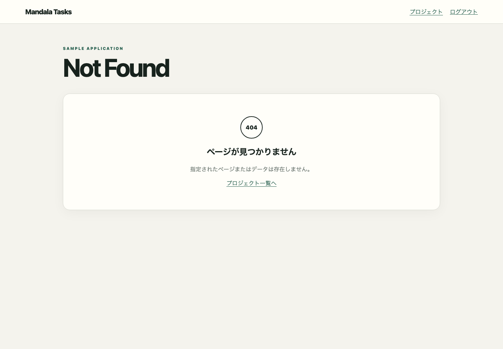

Deterministic Playwright capture for not-found
{}
mandala/snapshots/ui/not-found.jsonscreen:/does-not-existFrontend route /does-not-exist

この画面を開始または終了とする、E2Eで観測済みの1対1の画面遷移です。
各操作の開始状態、終了状態、順序、role、feature flag、結果、関連HTTPを表示します。
/does-not-exist{}
mandala/snapshots/ui/not-found.json